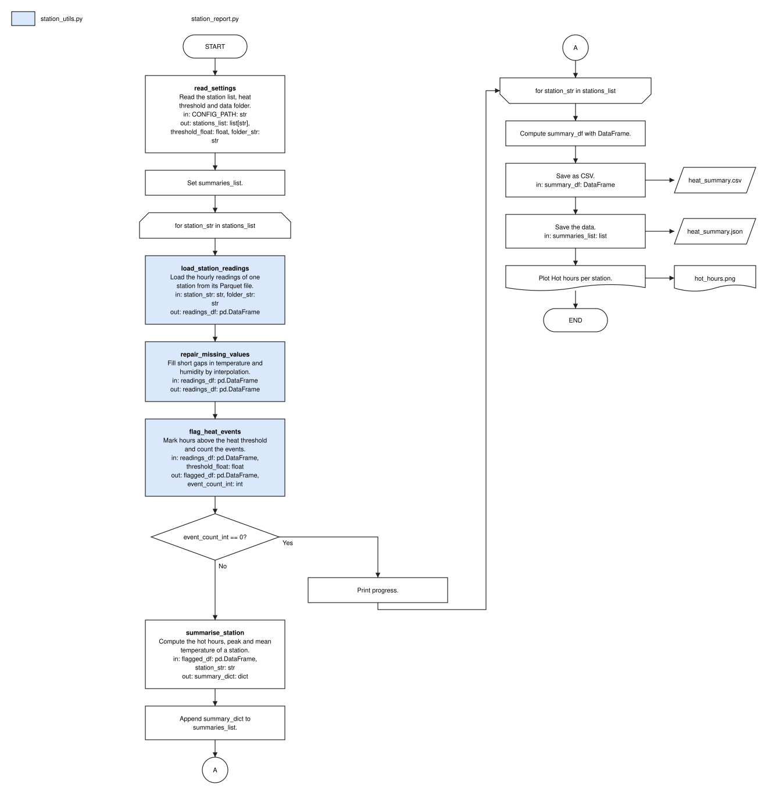

FlowBlueprint
Turn any Python script, Jupyter notebook or whole project into a clear architecture diagram, without running it.
pip install flowblueprintflowblueprint my_script.pyflowblueprint analysis.ipynb -o FLOW.mdflowblueprint my_project/flowblueprint my_script.py --level summary -o overview.svg
What it does
Blocks with meaning
Each call becomes a block with a verb-first title, a one-line description and its inputs and outputs with data types.
Real flowchart shapes
Loops, if/else decisions, files, databases, cloud storage and plots get their own shapes; continue, break and return are routed correctly.
Whole projects
Point it at a folder: one block per script, module and notebook, with arrows for imports and the data each file reads and writes; big projects are grouped by sub-package.
Notebook sections
Markdown headings and # %% Title cell markers become section banners, so the diagram follows the story of the notebook.
Formats people use
draw.io (editable), SVG, a self-contained HTML page, or Mermaid that GitHub, GitLab, Notion and Obsidian render.
Summary or detail
One block per call, or several operations packed into one higher-level block; name groups yourself in a small TOML file.
Safe by design
The code is parsed, never imported or run; source files are never changed; unknown types are shown as unknown, never guessed.
Who it is for
Developers and data scientists
document a pipeline, review a pull request or explain a notebook.
Managers and product owners
see what a script does, step by step, before a review.
Students and teachers
present coursework and assignments as a clear flowchart.
Teams taking over code
get an architecture overview of unfamiliar code in seconds.
Questions
How do I generate an architecture diagram from Python code?
Install FlowBlueprint and run flowblueprint script.py. It writes script.drawio next to the script; use -o diagram.svg for an image or -o FLOW.md for Mermaid.
Can it draw a Jupyter notebook?
Yes. Code cells are read in order; magics and shell lines are skipped. Run flowblueprint notebook.ipynb.
Does it run my code?
No. The code is parsed with Python's own ast module and never imported or executed.
Can I put the diagram in my README?
Yes: -o FLOW.md or -o ARCHITECTURE.md writes a Mermaid flowchart that GitHub and GitLab render directly.
Does it need an AI model or an account?
No. It is deterministic, works offline and is MIT-licensed.
One family of tools
FuncLoom
the functionizer: scripts and notebooks to functions and packages
RefacTrail
the refactorizer: linter, formatter and verified refactoring
FlowBlueprint
the architect: code to architecture diagrams